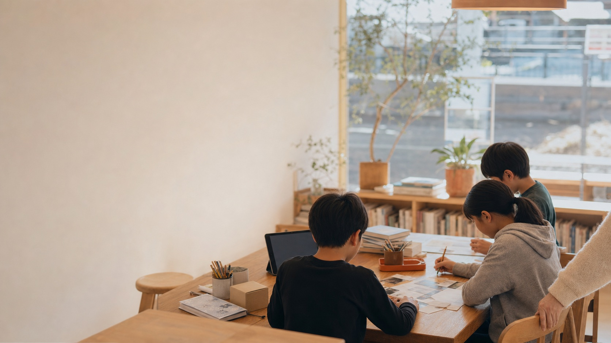
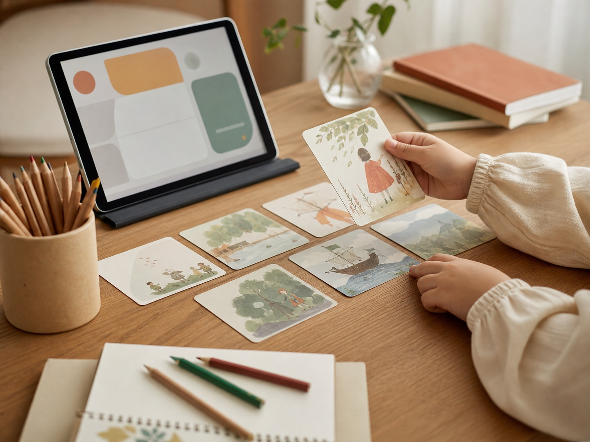
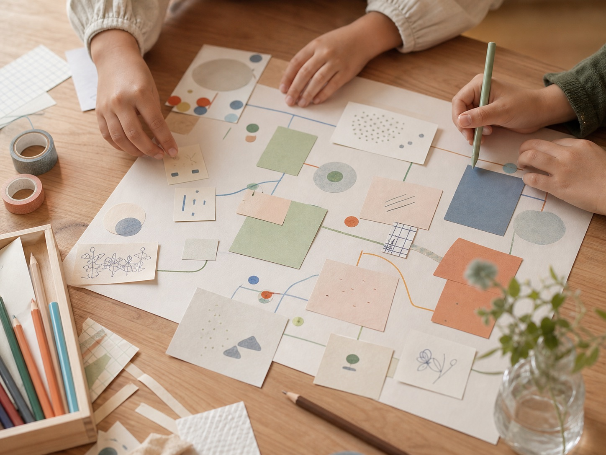
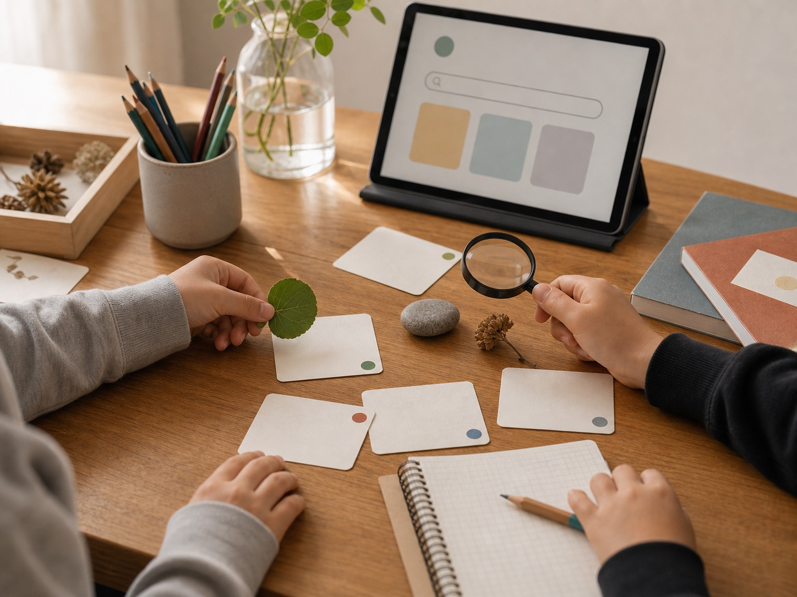
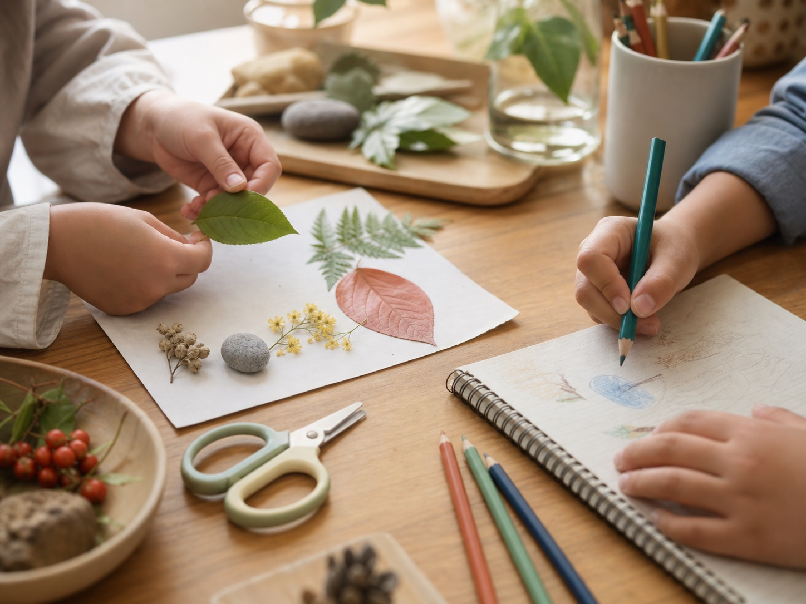
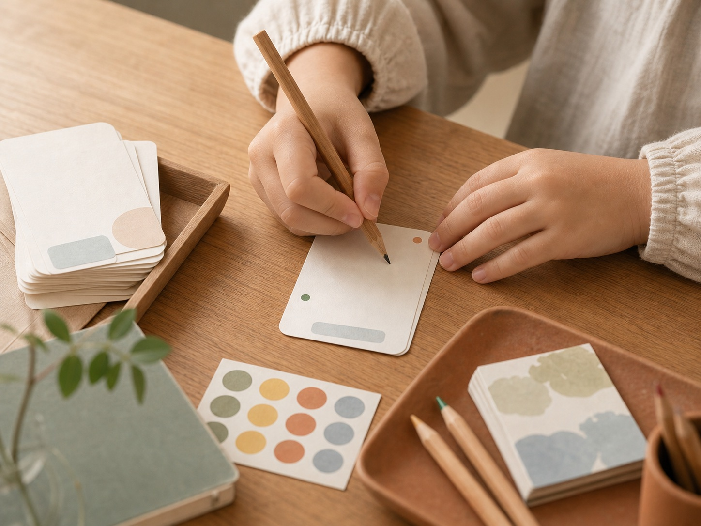

01
安心していられること
すぐに話せなくても、発表が苦手でも、見ているだけでも大丈夫。「ここにいてもいい」と感じられる時間を大切にします。

✳︎学校でも塾でもない。一人ひとりの興味を起点に、その子のペースで世界を少しずつ広げていくためのもう一つの居場所です。
うまく話せなくても、
得意がまだ見つかっていなくても、大丈夫。
急いで何かをできるようにするのではなく、その子の中にある小さな興味や変化を、一緒に見つけていく場所です。
学校や塾とは違う落ち着いた居場所で、好きなことや気になることを、自分のペースで探していきたいお子さんに向いています。
すぐに話せなくても、発表が苦手でも、見ているだけでも大丈夫。「ここにいてもいい」と感じられる時間を大切にします。
物語、絵、AI、宇宙、虫、音楽、写真、工作。正解や将来の夢を急がず、今ちょっと気になることから一緒に広げます。
できたこと、気づいたこと、少し楽しかったこと。大きな成果ではなく、毎回の小さな変化をカードに残していきます。

好きなキャラクターや世界を、AIも使いながら形にしていく。
半年後、1年後、少し先の自分に向けて言葉を残す。

好き・気になる・やってみたいを、カードや紙に並べていく。

宇宙、虫、ゲーム、植物、音、絵。気になることを深掘りする。

絵、文章、工作、デジタル制作。その子に合った方法で表す。

その日に見つけた小さな成長や気づきを残していく。
好きなキャラクターや世界を、AIも使いながら形にしていく。
半年後、1年後、少し先の自分に向けて言葉を残す。
好き・気になる・やってみたいを、カードや紙に並べていく。
宇宙、虫、ゲーム、植物、音、絵。気になることを深掘りする。
絵、文章、工作、デジタル制作。その子に合った方法で表す。
その日に見つけた小さな成長や気づきを残していく。
話したくない日は、カードを選ぶだけでも大丈夫。共有も、話したい子が自分のタイミングで行います。
今日の気分や、やりたいことをゆっくり確認します。
用意されたテーマや、自分の興味から活動を選びます。
AI、紙、本、道具を使い、自分のペースで取り組みます。
話したい子だけ、作ったものや気づきを共有します。
今日の小さなUPをカードに残し、保護者にも共有します。
来年以降の開始に向けて、現在準備を進めています。関心のあるご家庭と対話しながら、無理のない参加方法を一緒に考えていきます。
料金は現在調整中です。
開始後は、体験参加3,000円前後、月2回コース1万円前後を目安に検討しています。
正式な料金・開始時期は、準備状況と実施内容に合わせてご案内します。
保護者の方に安心していただくため、最初に明確にしておきます。
以下の施設・サービスではありません。
長時間のお預かりや送迎、食事提供は行いません。少人数・予約制の、子ども向け探究・表現プログラムとして実施します。発達特性のあるお子さんや、学校生活に不安のあるお子さんについても、事前に保護者の方と相談しながら、無理のない範囲で参加方法を検討します。
開始後の初回は、保護者の方の見学も可能にする予定です。お子さんの性格や不安に合わせて、参加方法を一緒に考えます。
安心していられる時間を。
「好き」の芽を見つけるきっかけを。
世界が少し広がる経験を。
子どもにとって本当に大切な成長は、テストの点数や目に見える成果だけでは測れないことがあります。
学校でも、家庭でも、塾でもない。でも、その子にとって少し安心できて、少し世界が広がる場所。そんな時間を、一緒につくっていきたいと思っています。
大学で特別支援教育を学び、小学校教員免許・特別支援学校教員免許を取得しました。その後、障がい者雇用に取り組む企業でスーパーバイザーとして働き、環境や関わり方によって人の可能性が大きく変わることを実感しました。
現在は外資系コンサルティングファームでシステムエンジニアとして勤務しながら、個人で、「日々の小さなUPを積み重ねるライフログアプリ」や「未来の自分に手紙を届けるアプリ」など、Unbarriaのプロダクトをつくっています。
私自身も、子どもの頃に居場所について悩んだ経験があります。だからこそ、教育・福祉・ITの経験をつなげながら、子どもたちが安心していられて、自分の興味や小さな変化を大切にできる場所を準備しています。
学校の勉強を教える学習塾ではありません。ただし、お子さんの興味や探究テーマの中で、調べる・書く・考える・発表する力は自然に使っていきます。
はい。まずは体験参加や保護者面談からご相談いただけます。お子さんに合うかどうかを見ながら、無理なく参加方法を考えていきます。
大丈夫です。最初から話したり発表したりする必要はありません。カードを選ぶ、見ている、少しだけ参加するなど、その子のペースを大切にします。
参加できます。ITやAIはあくまで興味を広げるための道具として使います。絵、手紙、工作、対話など、デジタル以外の活動も大切にします。
開始後の参加可否は、事前に保護者の方と相談して決めます。少人数の環境で無理なく参加できる形を一緒に考えます。ただし、専門的な療育や医療的支援を提供する場ではありません。
開始後の参加について相談できます。ただし、学校復帰を目的にする場所ではありません。まずは安心して過ごせること、興味を少しずつ広げることを大切にします。
開始後の初回は見学可能にする予定です。お子さんが不安な場合は、無理なく参加できる形を相談しながら進めます。
送迎は行いません。保護者の方による送迎をお願いします。
食事の提供は行いません。飲み物は各自でご持参ください。必要に応じて市販の個包装のお菓子等を扱う場合は、事前に確認します。
大人数が少し苦手な子。自分の好きなことをゆっくり見つけたい子。学校や塾以外の場所で安心して過ごしたい子。IT、AI、物語、絵、科学、工作などに少しでも興味がある子に向いています。